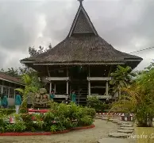
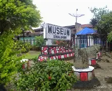
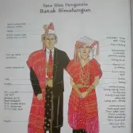
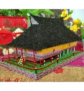
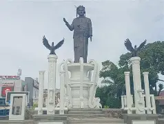

Alamat
Jl. Sudirman No. 20, Pematangsiantar, Sumatera Utara.
Buka di Google Maps →


Deskripsi
Museum Simalungun di Pematangsiantar adalah museum yang berfungsi sebagai pusat pelestarian budaya Simalungun. Museum ini dibangun atas prakarsa tujuh Raja Simalungun dan diresmikan pada tahun 1940.
useum ini memiliki koleksi sekitar 860 benda, termasuk senjata tradisional, kerajinan kayu, naskah kuno, keramik, dan arca. Arsitektur museum mengikuti gaya Rumah Bolon adat Simalungun. Selain sebagai destinasi wisata sejarah, museum ini juga berperan dalam edukasi budaya dan pengenalan warisan lokal kepada generasi muda.
Koleksi Unggulan

Pakaian Adat Simalungun
Senjata Tradisional

Miniatur Rumah Bolon

Patung Tokoh Simalungun
Spot Foto Populer

Halaman Museum

Ruang Artefak

Galeri Sejarah

Area Koleksi Adat